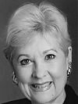

About the Arts Festival
Park Cities Presbyterian Church presents its second annual juried exhibition and a sale of fine art, April 5-13, 2008.
First, the show has a new location! To celebrate their Grand Opening, the Villa Rosa Gables, located in the heart of Uptown at Cole Avenue and Cedar Springs, will host the PCPC Arts Festival in their lovely new facility.
Second, the show dates have been extended! As requested by many of the 2007 PCPC Arts Festival artists, we will host a three week run of the show, Beginnings.
The Arts Festival will continue to be displayed in the Villa Rosa Gables for the DADA (Dallas Art Dealers Association) annual Spring Gallery Walk reception on April 19 and the spring Uptown Dallas Art Walk on April 24. Therefore, the show is likely to be viewed by even more people than the 4,000 who attended last year.
Note: Due to the show extension, the Art Pick-Up date has been moved to Saturday, April 26 (from 10:00 am – 12:00 noon) at the Villa Rosa Gables.
The Themes
- Theme One
-
BEGINNINGS OF CREATION
Genesis 1:1-2:3 -
The seven days when God creates heaven and earth
- Theme Two
-
BEGINNINGS OF MAN AND WOMAN
Genesis 2:4-25 -
God’s creation of man and woman, with His plan and purpose for mankind
- Theme Three
-
TEMPTATION AND FALL
Genesis 3:1-7 -
The origins of temptation and sin that lead to the fall of mankind
- Theme Four
-
JUDGMENT AND HOPE
Genesis 3:8-24 -
The consequences of sin, the separation from God, and the subsequent search for hope
Meet the Jurors
Patricia Meadows
 Senior Vice President of Hall Financial Group and Senior Curator and Collection Manager of the Texas Sculpture Garden, Mrs. Meadows is owner of Art Connections and co-founder and a long-term curator of the Dallas Visual Art Center. Career highlights include originating the Critic’s Choice, the Collectors, and the Emergency Artists Support League and organizing the Texas Sculpture Garden. She has also been honored with the Legend Award and the Mayor’s Proclamation of 2001.
Ted Pillsbury
Dr. Ted Pillsbury is an internationally known scholar and former Yale University curator and 18 year Kimbell Art Museum Director. He is the Chairman of Fine Arts for Heritage Auction Galleries of Dallas.
Dr. Pillsbury is one of America’s foremost museum professionals who helped build the art collections of the renowned Kimbell as well as the Paul Mellon Collection of British Art and served as the founding director of the Bellagio Gallery of Fine Art housing the Steve Wynn collection. He has an international reputation as a connoisseur, scholar, and arts administrator.
Among his many outstanding accomplishments, Dr. Pillsbury is a member of the prestigious American Academy of Arts and Sciences. In 1991 New York Times art critic John Russell characterized Dr. Pillsbury as “one of the most gifted men in the American museum profession.”
A graduate of Yale University, Dr. Pillsbury holds a Ph.D. in Italian Renaissance Art from the University of London’s Courtauld Institute of Art. His acclaimed former management positions include Director of the Yale Center for British Art and Chief Executive Officer of the Paul Mellon Centre for Studies in British Art in London. He served as Director of the Meadows Museum and Professor of Art History at Southern Methodist University in Dallas, and is currently a Research Professor at the University of Texas at Dallas, a position he holds part-time.
A native of Minneapolis, he is the great-grandson of the founder of the Pillsbury Milling Company, today known to consumers as the Pillsbury bakery division of General Mills, Inc.
Pete Deison
Founder of the PCPC Arts Festival, Dr. Peter Van Deison (“Pete”) is a pastor, teacher and author. He has served as a pastor in the PCA since 1978. Currently he is the pastor of Church wide Ministries at Park Cities Presbyterian Church in Dallas. He oversees the Deacon Board, Senior Adults, Pastoral Care, Single Adults, Men and Women of the Church groups, Weddings, and teaches a large Sunday School class composed of the mid-lifers of PCPC. He is an Adjunct Professor of Leadership Development at nearby Dallas Theological Seminary. He has written sections in several recent books, one of which is the Christian Educators Handbook on Spiritual Formation. His own book, The Priority of Knowing God focuses on the believers struggle and growth in personal devotions. Pete currently has several other works in progress.
EDUCATIONAL BACKGROUND
BA, University of Texas (1968); ThM, Dallas Theological Seminary (1978);
PhD., The Fielding Institute (1994).
Dr. Deison enjoys traveling the world and has experienced the countries of Belgium, France, Netherlands, Germany, Switzerland, Scotland, Turkey, Chad, Thailand, Guatemala, Panama, South America, Australia & New Zealand, Greece on four occasions, Holy Lands on seven occasions, Mexico on two occasions and Ukraine on two occasions.
Dr. Deison will be taking a group to southern France this May to journey into the history of the Huguenots and the realm of Van Gogh who was the son of a Protestant preacher.
He shares his life with his wife, Harriet; two grown daughters, Mrs. Ginny Huntress and Mrs. Ann Drexler and five grandchildren.